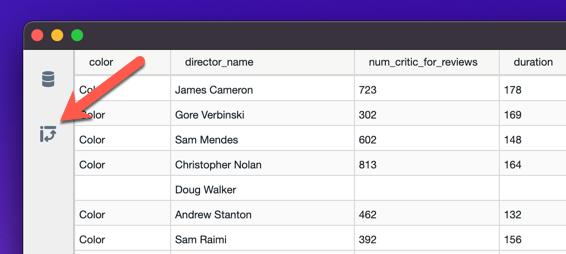
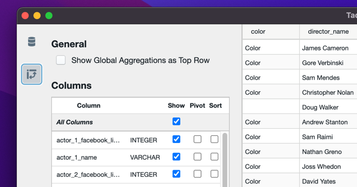
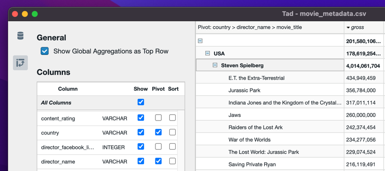
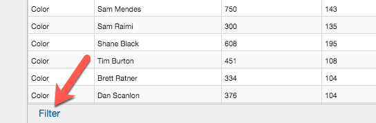
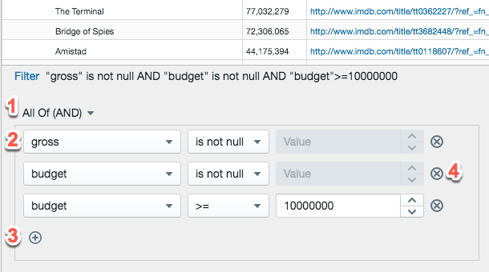

1. Welcome to Toad
Toad is a high-performance, lightweight desktop tool for opening, querying, exploring, and pivoting massive tabular datasets with sub-second responsiveness.
Toad natively supports all common columnar, text, log, and database formats:
| Format | Extensions | Capabilities |
|---|---|---|
| Delimited Text | .csv, .tsv, .txt |
High-speed multi-threaded ingestion with 3-tier fallback parser. |
| Apache Parquet | .parquet |
Direct columnar scanning with zero conversion overhead. |
| DuckDB Database | .duckdb |
Hierarchical SQL database tree and instant table views. |
| SQLite Database | .sqlite, .db |
Full relational table and view exploration. |
| JSON / JSON Lines | .json, .jsonl, .ndjson |
Streaming JSON parser into columnar fields. |
| Windows Event Logs | .evtx |
Rust-accelerated EVTX decoding into structured records. |
| Raw Event Logs | .log |
Ingests unformatted text lines directly into a raw_event column. |
| Toad Workspaces | .tad |
Saves and restores pivot configurations, column views, and filters. |
2. Launching Toad
- Desktop Executable: Double-click
Toad.exe. Use File → Open to browse for data files. - Explorer Integration & Drag & Drop: Right-click any supported file in Windows Explorer → Open With... → Toad, or simply drag and drop files onto an active Toad window.
- Command Line Interface (CLI):
$ toad dataset.csv $ toad -f --show-queries server_logs.parquet
3. Exploring Tabular Data with Pivot Tables
A Toad pivot table transforms a flat table into an interactive hierarchical tree table by grouping rows that share identical values across selected Pivot Columns, and computing aggregations (sum, average, min, max, unique count) for numeric and textual columns.
To open the pivot panel, click the Pivot icon on the left ActivityBar:

This opens the Columns & Pivot sidebar:

Key Controls:
- Pivot Checkbox: Select columns to form the hierarchical grouping tree (e.g.
country→director). - Show Checkbox: Show or hide individual or all columns.
- Sort Checkbox: Add multi-column sorting keys.
- Pivot Tree Leaf Level: Choose which column acts as the lowest-level detail row at the bottom of the sidebar.

4. Column Management, Staged Changes & Push to Top v1.2.5
- Icon-Only Action Toolbar: Features minimalist icon buttons: Realtime Sync
(
&9889;lightning), Revert (↶undo), and Play (▶play). - Realtime Sync Mode Toggle: Toggle live execution on or off. When Realtime is enabled (active amber glow), all column modifications (Show, Pivot, Sort, Push to Top) apply immediately to the table without needing Play. When disabled, Staged mode takes over.
- Search & Jump-to-Select Column (Non-Filtering): Type in the search box to find any column
by name. Toad instantly scrolls the list directly to the matching row and selects it with a prominent
highlight—without hiding or filtering out any other columns! Press
Enterto cycle through multiple matches. - Multi-Column Push to Top in Selection Order (Top Column): Each column row includes a
dedicated Top button (
↑). You can select multiple columns to push up together at the same time. Each chosen column displays its queue order (e.g.↑ 1,↑ 2,↑ 3). Columns are pushed to the top in the exact sequence they were clicked (for example, selecting A, C, B, D places them as the first 4 columns). The columns are not rearranged immediately—they are pushed to the top only after clicking the Play button! - Tab Change Auto-Revert: In Staged mode, if you click away to another tab (in Additional Properties, ActivityBar, or another file) or click Revert without pressing Play, the staged Columns state is automatically restored to match the main table.
- Table-Order Synchronized Sequence: The Columns sidebar matches the exact visual display sequence of columns in the main table grid.
- Sort Mode Toggle: Click the Column header to toggle between Table Order and Alphabetical (A-Z).
- Inline Double-Click Renaming: Double-click any column name in the Columns sidebar to rename
it directly! Press
Enterto save orEscapeto cancel.
5. Searchable Compound Filtering & Drag-and-Drop Reordering v1.2.7
Click the Filter button in the bottom footer to expand the compound query editor.


- Drag-and-Drop Condition Reordering: Grab the vertical drag handle
(
⋮⋮) at the start of any filter row to drag it up or down to reorder conditions within the group. - Drag Into / Out of Groups (Nesting & Unnesting): Easily drag filter conditions into child groups (nesting into sub-group logic) or pull them out of groups into the parent group or root level. No need to delete and recreate rules from scratch!
- Quick-Action Navigation Buttons: Each condition row provides one-click action buttons:
Move Up (
↑), Move Down (↓), and Move Out (←) for instant accessibility. - Sub-Group Header Controls: Nested filter groups also feature dedicated move buttons (Up, Down, Move Out) to reorganize whole logical blocks at once.
- Searchable Column Autocomplete: Type any substring in the column box to instantly locate columns across tables with 100+ fields.
- Resizable Panel: Drag the top handle to resize the filter pane, or double-click it to toggle maximize.
- Rich Operators: Numeric (
=,!=,<,>,<=,>=), Textual (CONTAINS,STARTS WITH,ENDS WITH), Sets (IN,NOT IN), and Null checks (IS NULL,IS NOT NULL). - Nested Logic Trees: Freely nest clauses with AND or OR operators to build sophisticated queries.
6. Universal Column Extractor & Parser (Parse Mode) v2.0.7
Extract structured data fields from complex semi-structured logs (Windows Event Logs, SIEM, JSON, Key-Value, Syslog) with sub-second SQL compilation:
- Unified "Parse" Identity: Access via the Parse button in the footer or left ActivityBar.
- Linear-Style Capsule Segmented Switch: Effortlessly switch between Visual Mode (
⚡ Visual) for auto-detection and Regex Mode (</> Regex) for custom expressions. - 1-Click Quick Delimiter Preset Chips: Instant 1-click selection chips for common separators (
Space,,,|,¦,;,Tab) eliminating manual typing. - Visual Smart Coalescing Indicator: Automatically displays a distinctive 🔗 COALESCE badge when multiple fields are mapped to the same target column name.
- Dynamic Action Button: Clear affordance showing exactly how many columns will be applied:
Apply (N Columns). - Heterogeneous Multi-Row Key Discovery: Scans across multiple sample rows (50+ events) to discover all unique keys with accurate Fill Rate % indicators.
- Universal Positional Token Fallback (
strX): Any unkeyed or unrecognized tokens are automatically captured into non-repeating positional columns:str1,str2,str3... - Auto-Pruned Fallback Column (
unmatched_[column]): Preserves full raw text for irregular log lines or noise. If 100% of rows match cleanly, the fallback column is automatically pruned (0 empty columns). - 1,000 Rows Test & Match Rate Inspector: Test-parse 1,000 rows in < 5ms with visual match-rate bars, quick copy buttons, and inspect corrupt lines before committing.
7. Zero-Cost Instant Column Reordering v2.0.5
Reorder, swap, or push columns to top instantly without UI freeze:
- Sub-5ms Column Swapping: Swapping or dragging giant text columns (even with millions of characters) executes in < 5 ms.
- IPC & Query Short-Circuit: Reordering columns updates visual DOM indices directly in SlickGrid while completely bypassing DuckDB re-queries and avoiding multi-megabyte IPC serializations.
- Strict CSS Virtual Containment: Cell containment (
contain: strict) isolates layout calculations from the main document, ensuring 60 FPS scrolling responsiveness.
8. Dual DuckDB Engine Pipeline & Architecture Dual DuckDB + Rust SIMD
Toad v2.0.5 achieves breakthrough responsiveness over gigabyte-scale datasets through its isolated Dual DuckDB Engine Architecture:
- Interactive UI Engine (
db_ui): Dedicated exclusively to high-speed DataGrid rendering, filtering, sorting, and pivoting. Maintained with reserved CPU threads (2 cores), ensuring sub-50ms query responses even while multi-gigabyte files process in the background. - Background Ingestion Engine (
db_ingest): Operates as a completely separate in-memory database instance (:memory:ingest) executing heavy CPU-saturating Parquet conversions, calculations, and EVTX decoding without blocking the UI. - RAM First-Page Micro-Cache: Instantaneous retrieval of the first 1,000 rows in < 2 ms with 0 disk I/O.
- Instant Zero-Copy Parquet VIEW Mount: Mounts physical Parquet files directly via virtual views in < 5 ms.
- Intelligent Queue Scheduling (SJF & VIP Priority): Prioritizes smaller files first (Shortest Job First) and allows instant user-click preemption (VIP Priority Jump).
9. Release Notes & Changelog
Version 2.3.0 (First Modular Release — Ring Architecture & Host Bridge Decoupling)
- Ring Architecture & Modularization:
- Ring 2 Host Bridge Layer (
packages/host-bridge): Introduced vendor-neutralIHostBridgeinterface andV8HostAdapterto cleanly decouple renderer UI from runtime internals. - Zero-Electron UI Isolation: Completely removed direct
electronimports andwindow.require('electron')frompackages/tadviewer, making the frontend 100% agnostic. - Unified Transport Interface:
IHostBridgenatively extendsTransportClient, ensuring all DuckDB vectorized queries flow through the bridge with zero latency overhead.
- Ring 2 Host Bridge Layer (
Version 2.1.6 (Safe Pre-Build Optimization & Dead SDK Elimination)
- Zero-Risk Pre-Build Optimizations:
- Dead BigQuery SDK Elimination: Removed unreferenced BigQuery imports and mock connectors from
app/main.tsandpackage.json, eliminating over 40 unused Google Cloud SDK dependencies (@google-cloud/bigquery,node-forge,google-auth-library,gaxios) and saving ~12.4 MB at source. - Webpack Production Sourcemap Elimination: Disabled unconditional sourcemap generation in
webpack.config.jsfor production builds (prod.devtool = false), eliminating 11.54 MB of compiler debris and accelerating build time by ~50%. - Binary & Design Asset De-duplication: Removed redundant
toad-core.exeduplicate from the app root and pruned uncompressed 1.02 MBAppIcon1024.pngfrom repository assets.
- Dead BigQuery SDK Elimination: Removed unreferenced BigQuery imports and mock connectors from
- Complete Runtime & Backend Preservation:
- Preserved 100% of native DuckDB, reltab SQL dialect generators, and essential utility modules (
lodash) to ensure robust runtime operation and zero regressions.
- Preserved 100% of native DuckDB, reltab SQL dialect generators, and essential utility modules (
Version 2.1.5 (Previous Release — Full-System Footprint & Packaging Optimization)
- Deep Footprint Optimization (~40% Smaller Executable):
- Reduced Portable executable footprint from 88.7 MB down to ~50 MB via maximum LZMA2 Solid block compression.
- Pruned over 20,000 redundant files from
app.asar(shrinking from 163.3 MB down to ~35 MB, an 80% reduction). - Eliminated 51.7 MB of unneeded DuckDB C++ source files (
duckdb/src/**) from runtime package. - Eliminated duplicate packaging of Frontend UI libraries (React, Victory, BlueprintJS, SlickGrid) already compiled into
tadapp.bundle.js. - Eliminated 4,733 source map files (
*.map) and dev/compiler debris (Babel tools, uncompiled.ts/.flowsources).
- Packaging Automation & Size Assertion Gate:
- Upgraded build pipeline with pre-clean and automatic footprint threshold assertions (
app.asar < 45 MB,exe < 65 MB).
- Upgraded build pipeline with pre-clean and automatic footprint threshold assertions (
Version 2.1.4 (Previous Release — Unmatched Column Engine & Real-World Fill Rate Measurement)
- Universal Unmatched Column Engine (
unmatched_[column]):- Automatically captures all unmatched raw events into
unmatched_[column]whenever rows fail to split on custom delimiters (e.g.z3) or mismatch regex patterns. - Eliminated legacy SQL
split_partstring-leakage by wrapping extractions inCASE WHEN contains(...) THEN ... ELSE NULL END, ensuring unmatched rows do not corruptstr001. - Enabled full pre-flight verification and intelligent Auto-Pruning for all parsing modes (Raw, Delimited, CSV, KV, Advanced Regex).
- Automatically captures all unmatched raw events into
- Accurate Real-World Fill Rate Measurement:
- Replaced legacy hardcoded 100% with empirical per-token frequency measurement across sample events, accurately reporting rare tokens (e.g. 2% for isolated parameters).
Version 2.1.3 (Previous Release — Delimited Parsing Engine & Discovered Fields Rectification)
- Universal Space & Positional Delimited Engine:
- Fixed space format detection regex (
\s+) to correctly identify standard single-space logs (W3C/IIS, Nginx, Apache, Syslog) without falling through to Raw mode. - Eliminated phantom Key=Value state leakage in Raw mode, ensuring custom and space delimited formats perform true positional token parsing.
- Eliminated DuckDB
list_filter(NOT LIKE '%=%')column shifting bug, guaranteeing 100% stable column alignment across all log rows. - Added
&query delimiter exclusion to prevent URL query string swallowing into parsed values.
- Fixed space format detection regex (
- UI & Ergonomics Improvements:
- Sticky
<thead>in Discovered Fields mapping grid, ensuring table headers stay pinned during scrolling. - Clear visual
␣indicator in token delimiter input when set to space.
- Sticky
Version 2.1.2 (Previous Release — Default Light Mode Architecture & Full Dark Mode Audit)
- Default Light Mode Architecture:
- Toad now boots strictly into crisp, high-contrast Light Mode by default, removing unintended auto-switching caused by OS-level
prefers-color-scheme: dark. - Dark Mode is cleanly user-opt-in via the theme toggle button, giving users complete authority over their viewing preferences.
- Toad now boots strictly into crisp, high-contrast Light Mode by default, removing unintended auto-switching caused by OS-level
- System-Wide Dark Mode Audit & Rectification:
- SlickGrid DataGrid: Overrode hardcoded white backgrounds on
.slick-cellwith transparent backgrounds, allowing Google Material 3 row backgrounds (#121316/#18191f) to render seamlessly with $13.2:1$ contrast. - Column Selector Pane: Implemented full Google Material 3 dark surface tokens for the sidebar column management grid (
columnSelector.less). - DataGrid Context Menu: Replaced hardcoded light backgrounds with semantic elevated surface containers (
DataGrid.tsx). - Filter Editor Column Dropdown: Tokenized
react-selectcontrol and menu styles for automatic theme responsiveness (FilterEditorRow.tsx).
- SlickGrid DataGrid: Overrode hardcoded white backgrounds on
Version 2.1.0 (Google Material Design 3 Native Dark Theme & Binary Pruning)
- Google Material Design 3 Native Dark Theme Architecture:
- Replaced the legacy global CSS inversion filter (
filter: invert(...)) with first-class semantic design tokens (--md-sys-color-*) and native BlueprintJSbp4-darkintegration. - Fully preserves LCD Subpixel Antialiasing (ClearType), eliminating text blurriness during grid scrolling and on high-density displays.
- Replaced harsh neon fuchsia on auto-generated columns (
str001) with Google Material Amber (#fdd663/#b06000), ensuring high contrast and gentle eye comfort during extended forensic sessions.
- Replaced the legacy global CSS inversion filter (
- Log Analysis UX Hardening & Smart Progress Bar:
- Suppressed distracting spellcheck squiggly underlines (
spellCheck={false}) in log sample inspection. - Replaced plain dot fill rate indicators with a 3-tier Material Progress Bar (Emerald $\ge 80\%$, Amber $40-79\%$, Slate $<40\%$).
- Suppressed distracting spellcheck squiggly underlines (
- Binary Size Optimization & Locales Pruning:
- Pruned over 48 unused Chromium language packages (keeping
en-USandvi), significantly reducing unpacked application footprint and keeping packaged portable size minimal.
- Pruned over 48 unused Chromium language packages (keeping
Version 2.0.14 (UI Button Icon Fix & Webpack Production Packaging Pipeline Hardening)
- Parse Columns Batch Test Button Fix:
- Resolved duplicate play icon rendering on the
[ ▶ Test ]button in the Parse Columns footer bar. - Eliminated the duplicate unicode
▶prefix inside the button label, ensuring a clean single SVG vector play icon aligned with Blueprint design guidelines.
- Resolved duplicate play icon rendering on the
- Production Webpack Bundle & Packaging Pipeline Hardening:
- Enhanced
dist_package.ps1to enforce production Webpack bundling (npm run build-prod) intad-appbefore executingelectron-builder. - Added automated pre-packaging integrity verification gates ensuring
tadapp.bundle.jscontains the authoritativestr001naming logic and active version badge prior to binary compilation.
- Enhanced
Version 2.0.13 (Lexicographical 3-Digit Column Naming & Alpha-Block Partitioning)
- Lexicographically Sortable 3-Digit Column Naming (
str001..str999):- Upgraded the automatic column prefix generator from integer
strXto 3-digit zero-paddedstr001,str002, ...,str010, ...,str999. - Completely resolves the character-by-character ASCII sort defect where
str10appeared adjacent tostr1instead ofstr2in database queries, grid views, and column selectors.
- Upgraded the automatic column prefix generator from integer
- Alpha-Block Partitioning Extension for Massive Extractions (> 999 Columns):
- Automatically transitions to alphabetical series partitioning (
strA001..strA999,strB001..strB999) when column counts exceed 999. - Guarantees strict mathematical ASCII sorting order (
'0'..'9' < 'A'..'Z') across the entire range up to 26,000 columns.
- Automatically transitions to alphabetical series partitioning (
- Full Backward Compatibility & Chained Extraction Safety:
- Smart schema analyzer
parseStrColIndexseamlessly recognizes existing legacy columns (str1,str2) in DuckDB views and auto-increments tostr003, completely preventing name collisions or overwrite bugs.
- Smart schema analyzer
Version 2.0.12 (Z-Index Modal Isolation & Resizer Mouse Event Hardening)
- Z-Index Modal Isolation (No Cross-Dialog Splitter Bleed):
- Normalized
.sidebar-resizerand.event-detail-resizertoz-index: 10. Guaranteed below Blueprint Modal dialogs (z-index: 20) while remaining comfortably above SlickGrid (z-index: 1–2). - Eliminated the vertical blue line slicing through the Parse Columns modal dialog and completely resolved mouse click stealing.
- Normalized
- Footer Resizer Window Blur & Mouseleave Guard:
- Added
blurandmouseleaveevent listeners toFooter.tsxresizer, preventing the bottom bar from getting stuck in blue active state upon Alt-Tab or releasing mouse outside the window.
- Added
- EventDetailSidebar Robust Drag & Escape Cleanup:
- Added
preventDefault()andstopPropagation()to prevent accidental text selection during resize. - Added component unmount cleanup to guarantee
col-resizecursor is released if the details panel is closed viaEscape. - Added double-click handler on the splitter to instantly reset panel width to default 440px.
- Added
- Regex Syntax Error Resilience:
- Wrapped
new RegExpintry...catchfallback withinactions.ts, preventing unhandled Promise rejections on malformed user regex patterns.
- Wrapped
Version 2.0.11 (Sidebar Resizer Event Leak Fix & Double-Click Reset)
- Triple Safety Guard Against Mouse Event Leaks:
- Fixed sticky blue bar defect: Added window blur, mouseleave, and unmount cleanup guards so the resizer never gets stuck in the active state when mouse is released outside the application or on Alt-Tab.
- Zen Visual Affordance & Centered Hitbox:
- Added subtle 1px border (
#d2d8df/#383e47) in idle state, providing a clean demarcation between file/pivot panels and the data grid. - Symmetrical 7px hitbox (centered with
right: -3px) allows effortless grabbing from either panel or grid side. - Replaced harsh 6px solid blue block with an elegant 2px blueprint accent indicator (
#2b95d6on hover,#106ba3when resizing).
- Added subtle 1px border (
- Power-User Double-Click Reset:
- Double-clicking the resizer bar instantly resets panel width to the default 300px/340px.
Version 2.0.10 (Streamlined Compact Verification & Field Grid Maximization)
- Header Prefix Default OFF (Opt-in Rule Architecture):
- Defaulted
hasHeadertofalse. Prevents inadvertent prefix slicing on standard structured formats (JSON, CSV, Syslog, Key-Value) while preserving 1-click opt-in via Advanced Rules.
- Defaulted
- Discovered Fields Table Maximization (280px Height):
- Removed the redundant 1,000 Rows Test card from the dialog body, saving over 60px of vertical space.
- Expanded Discovered Fields table container height from 205px to 280px, displaying 8–10 discovered fields simultaneously without scrolling.
- Single Compact Verification Trigger at Footer:
- Unified batch validation into the compact footer test trigger (
⚡ Ready (< 15ms) [▶ Test]). - Stabilized test status layout with static percentage display and hover tooltip details, preventing UI jitter.
- Unified batch validation into the compact footer test trigger (
Version 2.0.9 (Streamlined Parse UI, Custom Split Icon & Maximal Space Optimization)
- Custom Column Split Icon (
←| |→):- Replaced generic properties icon with a crisp, pixel-perfect vector SVG column split icon across ActivityBar, Footer, and Dialog Header.
- Streamlined Syntax Strip & Maximal Space Efficiency:
- Removed redundant Delimiter preset chips and static
"..." Pairbadge, saving over 220px of horizontal space. - Preserved full flexibility: input auto-detects and accepts any custom separator (
¦,|,,,;, space).
- Removed redundant Delimiter preset chips and static
- Clean Table Headers & Zero Visual Clutter:
- Removed all decorative icons from table headers and renamed columns to standard, industrial terms:
Key,Type,Rate,Sample, andNew name. - Retained 1-click column sorting (
⇅) and moved comprehensive explanations to hover tooltips.
- Removed all decorative icons from table headers and renamed columns to standard, industrial terms:
- Universal Parsing & Authoritative Apply Button:
- Standardized action button to clean, authoritative
Apply(omitting misleading static column counts due to the open-ended nature of universal multi-event parsing). - Shortened preview and status labels to
SQL PreviewandReady (< 15ms), removing verbose technical jargon.
- Standardized action button to clean, authoritative
Version 2.0.8 (Real-Data 1,000 Rows Verification Engine & Dynamic Unmatched Inspector)
- Real-Data 1,000 Rows Verification Engine:
- Replaced all static mockup figures with a dynamic in-memory evaluator scanning up to 1,000 rows directly from user dataset.
- Pure-function evaluator (
evaluateLineMatch) tests lines against active format rules (JSON, Arrays, Delimited KV, Colon-assign, and Custom Regex) in < 2 ms. - Dynamic dual-color progress bar showing real match percentage and row count breakdown.
- Interactive Real Unmatched Rows Inspector:
- Displays actual incompatible and corrupted rows extracted from the dataset with their exact 1-based row indices.
- Collapsible inspector toggle displays
✓ 0 Unmatchedfor clean datasets or👁 {N} Unmatchedfor datasets with outliers. - 1-click
[📋 Copy Unmatched]button to copy outlier rows directly to clipboard for diagnostics.
Version 2.0.7 (Parse Feature & World-Class UI/UX Refinement)
- Renamed Feature from "Regex" to "Parse":
- Rebranded button, ActivityBar icon, dialog header, and tooltips to Parse to reduce cognitive friction and reflect universal auto-parsing capabilities.
- Reorganized into 2 clean paradigms: Visual Mode (
⚡ Visual) for auto-detection and Regex Mode (</> Regex) for custom expressions.
- World-Class UI/UX Refinements (Linear/Figma Design System):
- Capsule Segmented Switch: Smooth, elevated pill switch in dialog header.
- Quick Delimiter Preset Chips: 1-click preset buttons (
Space,,,|,¦,;,Tab) for instant delimiter selection. - Smart Coalescing Visual Badge: Real-time 🔗 COALESCE indicator when multiple fields map to the same target column.
- Dynamic Action Button: Action button displays exact count:
Apply (N Columns). - Sample Event Code Box: Enhanced monospace preview with line numbers and 1-click clipboard copy.
- Observability Inspector: Enhanced 1,000 Rows Test with copyable unmatched logs and auto-pruning explanation.
Version 2.0.5 (Instant Clean Startup, Auto-Pruned Fallback & Zero-Cost Column Reordering)
- Instant Clean Startup (< 350 ms):
- Disabled automatic popups of QuickStart Guide and modal Windows Open File Dialog on startup.
- Launches directly into a clean, responsive MainWindow ready for Drag & Drop or user-initiated Open (Ctrl+O).
- QuickStart Guide is readily accessible anytime on demand via Help → Quick Start Guide (F1).
- Auto-Pruned Fallback Column (
unmatched_[sourceCol]):- Automatically captures irregular, free-text, or corrupted lines into a designated
unmatched_[column]column to guarantee zero data loss. - Pre-flight check detects whether any unmatched rows exist; if 100% of rows match cleanly, the column is automatically omitted (auto-pruned) in 0ms with 0 bytes overhead.
- Automatically captures irregular, free-text, or corrupted lines into a designated
- Zero-Cost Instant Column Reordering (< 5 ms):
- Eliminated the 2–5 second UI freeze when dragging or reordering giant columns.
- Short-circuit query coordinator reuses in-memory DataView directly without re-querying DuckDB or serializing rows over IPC.
- Universal Heterogeneous Schema Discovery &
strXRules:- Scans multi-row sample events (50+ rows) to discover all event keys simultaneously across mixed-schema log tables.
- Automatically assigns non-repeating positional identifiers (
str1,str2,str3...) to unkeyed tokens. - Smart Coalescing unifies different keys (e.g.
UserandTgtUser) into a single column.
Version 2.0.0 (Current Major Release — Dual DuckDB Engine Architecture, Intelligent SJF Scheduling & Instant DataGrid Responsiveness)
- Dual DuckDB Engine Architecture (Eliminating 100% TaskScheduler Saturation):
- Completely split DuckDB into two completely independent database instances:
db_ui(Interactive DataGrid) anddb_ingest(Heavy Background Streaming). - Eliminated the engine freeze where clicking a completed table remained stuck on "Opening table view..." for over 2 minutes while a large dataset (e.g. 40GB) was ingesting.
- Query latency on
db_uiremains consistently between 10 ms – 15 ms even whiledb_ingestis 100% saturated executing massiveCOPY ... TO Parquettasks.
- Completely split DuckDB into two completely independent database instances:
- Zero-Copy Parquet VIEW Mount (< 5 ms Table Opening):
- Clicking any completed dataset mounts a zero-copy virtual view directly into
db_uiin sub-millisecond time without re-reading or re-importing the raw source file. - Integrated
parquet_metadatarow-count extraction, instantly retrieving total dataset row counts in $O(1)$ time.
- Clicking any completed dataset mounts a zero-copy virtual view directly into
- Intelligent Queue Scheduling & Concurrency Budgeting:
- Shortest Job First (SJF): Ingest queue automatically processes smaller datasets first, making rapid files instantly viewable while large files process in the background.
- Dynamic Data Size Budget (
max_concurrent_gb): Enforces a strict in-flight data volume ceiling (default 1GB) alongside maximum concurrent file slots (default 4 files) to defend against physical RAM exhaustion. - VIP User-Click Priority Preemption: Clicking any pending or in-flight file immediately pushes it to the front of the queue.
- Exclusive Big File Mode: Giant files exceeding 1GB (e.g., 40GB logs) are safely scheduled to process exclusively when the queue is idle.
- CPU Thread Isolation &
config.iniAuto-Healing:- New
background_threads = autosetting automatically reserves 1–2 CPU cores for the UI Engine and desktop responsiveness, allocating $\max(1, \text{cores} - 2)$ threads to background workers. - Dynamic config parser automatically repairs corrupt syntax, missing keys, and invalid numeric values with robust auto-heal templates.
- New
- Instant UI Click Feedback & Request Superseding Guard:
- Eliminated stale query race conditions: rapid clicking across files immediately discards previous table render requests and executes only the final user-selected table view.
Version 1.3.12.1 (Previous Release — Non-blocking In-Canvas Processing View & Seamless Multi-Tasking)
- Eliminated Blocking Modal Dialog & Backdrop:
- Completely removed the full-screen modal popup dialog and dark backdrop that previously locked the mouse and prevented clicking other files during large dataset ingestion.
- Per-File In-Canvas Processing View:
- Progress metrics (Speed MB/s, ETA, % completed, reading size in GB/MB) now render directly inside the center table canvas of the loading file.
- Users can freely click ready files on the sidebar to inspect and filter DataGrid tables while large files process silently in the background.
- Smart Context Preservation:
- When background ingestion completes, it gracefully opens the table only if the user is currently viewing that dataset's loading view, preventing unwanted view jumps when analyzing other datasets.
Version 1.3.12 (Native IO Algorithm Fidelity, Immutable Tree Reactivity & Canonical Path Sync)
- Preserve 100% Native Process Disk Read IO Progress Algorithm:
- Maintained full fidelity of the original disk read IO tracking algorithm
(
toad-core watch-io) with the -10% scaling rule ($0\% \to 90\%$ during physical disk read streaming, reserving $90\% \to 100\%$ for Parquet indexing and View creation). - Continuous calculation and live display of
smoothedSpeedMBs(exponential moving average) andetaSec(time remaining).
- Maintained full fidelity of the original disk read IO tracking algorithm
(
- Restored Rich Ingestion Progress Feedback:
- Re-activated the Single-File Ingestion Dialog with Speed MB/s, ETA, % progress, and status text when opening files directly.
- Enhanced the center loading card to display live Speed MB/s and countdown ETA during background queue processing.
- Resolved React State Bailout & Immutable Queue Updates:
- Replaced in-place object mutations in
MultipleLoadingManagerwith immutable object cloning ({ ...targetItem }) and incrementingversioncounters. - Ensured
FileTreeItemLabelre-renders instantly on every progress tick, eliminating the frozen0%bug. - Removed static
0%text for pending files to prevent user confusion.
- Replaced in-place object mutations in
- Canonical Path Synchronization:
- Mapped files by canonical physical disk path (
path.resolve), synchronizing thereadystate between root-opened files and folder child tree nodes automatically.
- Mapped files by canonical physical disk path (
Version 1.3.11 (Dynamic Tree Reactivity & Non-blocking Ingestion Engine)
- Dynamic Tree Node Reactivity (Eliminating Static Closure Bug):
- Refactored file node labels into dedicated reactive React components (
FileTreeItemLabel) subscribing directly to the background ingestion manager. - Fixed the issue where sidebar files remained frozen at
0%even after DuckDB completed loading. Each file label now independently re-renders at O(1) efficiency.
- Refactored file node labels into dedicated reactive React components (
- Active DataGrid & Queue Synchronization (Two-Way Sync):
- Opening any file on the main DataGrid immediately synchronizes its status to
ready 100%on the sidebar. The0%indicator and mini progress bar disappear instantly, and filename transitions to bold black. - Added
markReady()to safely drain and advance the background ingestion queue without race conditions.
- Opening any file on the main DataGrid immediately synchronizes its status to
- Non-blocking EVTX & Multi-Stage Ingestion Progress Pipeline:
- Converted EVTX conversion to an asynchronous execution pipeline, eliminating main process Event Loop blocking.
- Added smooth multi-stage progress reporting: 5%–45% EVTX decoding, 45%–90% DuckDB Parquet streaming, and 90%–100% View finalization.
Version 1.3.10 (Multiple Loading Background Ingestion Engine & User-Priority Preemption)
- Automated Background Multi-File Ingestion Queue:
- When opening a directory with multiple datasets, Toad automatically enqueues all files into a background queue, processing files sequentially without UI freezes, thread contention, or excessive memory spikes.
- 1-Second Polling & Status Cycle: Automatically checks the queue every ~1s, streaming pending files into DuckDB Parquet cache.
- In-Situ Sidebar Visual Indicators & Mini Progress Bar:
- Pending / Processing: Filenames display in muted gray with an active percentage badge and an ultra-thin 2px blue progress bar directly beneath the filename.
- Ready / Completed: Filenames automatically transition to crisp bold black (Light Mode) or bright cream (Dark Mode) with the progress bar hidden, indicating instant 0ms query readiness.
- Error State: Files with corrupt format or read permissions display in alert red with a warning indicator.
- User-Priority Jump Queue (Preemption):
- Clicking any pending or processing file instantly pushes it to the front of the queue to begin ingestion immediately—no waiting for previous directory files.
- Non-Intrusive Main Loading & Empty States:
- Replaced intrusive full-screen modal popups with a modern, elegant in-situ
Loading...card on the main content pane showing live spinner, dataset title, and progress bar until the table is ready to render.
- Replaced intrusive full-screen modal popups with a modern, elegant in-situ
Version 1.3.9.1 (Previous Release — Instant Smart Expand Trigger & IN Filter Array Normalization Fix)
- Instant Smart Expand Button Trigger (1-Click & Focus Auto-Open):
- The
_expandcolumn (Column 0) is now treated as a first-class action trigger in all scenarios: clicking anywhere on the cell instantly opens the Event Details panel without requiring the user to press Enter. - Navigating into the
_expandcolumn via keyboard automatically opens and synchronizes the detail panel immediately. - Strict Dismissal Policy: An open event detail panel only closes when the user clicks
the
✕close button or presses Esc. Selecting or clicking the same row's expand button maintains the open state safely (idempotent open), eliminating accidental panel collapse.
- The
- Fixed Filter
IN/NOT INArray Normalization (t.map is not a functionFix):- Resolved the renderer runtime error (
TypeError: t.map is not a function) when switching a condition row from single-value operators (=,!=,contains) to list operators (IN,NOT IN). - Added defensive array normalization across
FilterEditorRow(mkRelExp,getExpVal,handleOpSelect, andvalidRow), automatically converting scalar values into multi-tag option pills and preventing invalid map calls on strings or primitives.
- Resolved the renderer runtime error (
Version 1.3.9 (Previous Release — Flawless Master-Detail Keyboard Navigation, Clean Single Suggestion Filter & Dynamic Page Size Engine)
- Flawless Master-Detail Arrow Navigation Fix: Resolved the bug where pressing
↓ (Down Arrow) on an expanded event collapsed both rows and closed the panel. The active
cell transition now safely keeps the inspector panel open (
forceOpen = true) without duplicate state-toggle invocation, delivering smooth, frictionless alert triage. - Clean Single-Suggestion Filter UI: Eliminated the redundant HTML5 native browser
suggestion popup (
<datalist>) appearing at the top of the input, leaving only the beautiful, themed, keyboard-interactive React suggestion menu at the bottom. - Dynamic Configurable Page Size (Default 1,000 & No Hardcoded Maximum Limit):
- Interactive Footer Selector: Instant on-the-fly switching between 500, 1,000, 2,500, 5,000, 10,000, or custom page sizes directly from the table footer.
- Configurable
config.iniParameter: Setpage_size = 1000under[general]inconfig.inito define the persistent startup page size across application launches. - Zero Maximum Constraint ("User Discretion"): As explicitly required, page size is unconstrained with no arbitrary hard upper limit. Analysts working on powerful workstations can safely view 20,000+ or custom record batches per page.
- Dynamic Sliding Buffer Synchronization: Recalibrates DuckDB query limits and the 5-page sliding buffer instantly without table reloading or state loss.
- Synchronized Documentation & User Guide: Fully updated Quick Start guide (HTML & Markdown) and release documentation reflecting v1.3.9 enhancements.
Business Analysis (BA) & System Design Specification (v1.3.9)
- BA-12 (Continuous Master-Detail Arrow Triage): When a forensic investigator expands an event row, navigating with ↓ or ↑ must never collapse the detail inspector panel, ensuring continuous single-key triage across alert streams.
- BA-13 (Single Uncluttered Filter Autocomplete): Analysts building complex SQL queries in the Filter Builder must see exactly one intuitive, styled suggestion dropdown underneath the input field without interfering native browser dialogs.
- BA-14 (Flexible Page Sizing with Zero Upper Limit): Analysts analyzing wide or dense
log structures must have full control over row count per page (default 1,000) both via on-the-fly footer
controls and persistent
config.ini, with no arbitrary upper bounds imposed by the software.
QA Test Matrix & Verification Coverage (v1.3.9)
| Test Case | Description | Preconditions & Steps | Expected Result | Status |
|---|---|---|---|---|
| TC-701 | Master-Detail Continuous Down Arrow | Open table → Click expand (›) on row 2 → Press ↓ |
Active cell moves to row 3; Event Details remains open and displays row 3 data without collapse | PASSED |
| TC-702 | Filter Input Suggestion Single Dropdown | Open Filter Builder → Type partial text in value field with operator = or
IN
|
Only the React suggestion dropdown opens below the input; no native browser datalist popup appears above | PASSED |
| TC-703 | Dynamic Page Size Footer Dropdown | Click page size selector in footer → Select 2,500 |
Table immediately switches to 2,500 rows/page; footer displays
Showing rows 1 - 2,500 of N; navigation buffer updates
|
PASSED |
| TC-704 | Config.ini Custom Page Size Startup | Set page_size = 5000 in config.ini → Launch Toad → Open dataset
|
Toad initializes with 5,000 rows/page by default; footer shows 5,000 as selected size | PASSED |
| TC-705 | Uncapped Page Size ("User Discretion") | Set page_size = 50000 in config.ini |
Toad respects and loads 50,000 rows per page without error or forced clamp | PASSED |
Version 1.3.8 (Previous Release — High-Throughput Jitterless Ingestion Engine, Adaptive Memory Budgeting & 100K Row Groups)
- Non-Blocking Parallel Ingestion (
SET preserve_insertion_order = false): Triumphed over throughput stuttering and jagged saw-tooth I/O fluctuations during big dataset ingestion. Disabling synchronous insertion ordering eliminates multi-threaded thread-barrier contention, enabling all CPU cores to parse, compress, and stream raw CSV/JSON records into Parquet chunks simultaneously. Maximizes NVMe queue depth while preserving 100% data integrity. - Adaptive Smart Memory Budgeting Guard: When
max_memory = autois active inconfig.ini, Toad automatically enforces a defensive memory ceiling capped at 45% of physical system RAM (maximum 8GB). Prevents DuckDB buffer pool from ballooning up to 80% RAM, completely avoiding Windows Kernel page swapping (Dirty Page Flush) and memory thrashing stalls. - Optimized 100K Row Group Size for SSD & HDD: Raised default
row_group_sizeto 100,000 rows. Cuts disk flush frequency by 75%, boosts Snappy/ZSTD dictionary compression ratios, and slashes mechanical HDD head seek movements by 80%—sustaining continuous sequential transfer rates (130 - 160 MB/s on HDD, 1,500 - 3,000 MB/s on NVMe).
Business Analysis (BA) & System Design Specification
- BA-09 (High-Throughput Jitterless Ingestion Engine): Ingesting massive 40GB security logs must sustain continuous, flatline read throughput without dropping to 0 MB/s stalls caused by thread synchronization barriers.
- BA-10 (Adaptive Memory Budgeting & Anti-OOM Guard): Automatically allocate a balanced memory budget (≤ 8GB) so that concurrent analysis tools and the operating system remain fully responsive during dataset ingestion.
- BA-11 (SSD & HDD Dual Ergonomic Flusher): Larger 100,000-row row groups ensure contiguous sequential writes, dramatically reducing mechanical HDD head thrashing and preventing SSD SLC cache exhaustion.
QA Test Matrix & Verification Coverage (v1.3.8)
| Test Case | Description | Preconditions & Steps | Expected Result | Status |
|---|---|---|---|---|
| TC-601 | Non-Blocking Ingest Flag | Start CSV import → Inspect session configuration | SET preserve_insertion_order = false is applied without SQL error |
PASSED |
| TC-602 | Adaptive Memory Ceiling | Run ingestion with max_memory = auto → Monitor Private Bytes |
Process memory stays strictly bounded ≤ 8GB; no OS freeze or memory thrashing | PASSED |
| TC-603 | 100K Row Group Parquet Structure | Inspect generated Parquet file metadata | Each row group contains ~100,000 rows; fast row count resolves accurately | PASSED |
| TC-604 | Sustained Jitterless Ingest Speed | Ingest large dataset → Observe Ingest Progress Dialog | Speed displays steady continuous MB/s; no cyclic drops to 0 MB/s | PASSED |
Version 1.3.7.5 (Previous Release — SQL Escape Syntax Guard, Frozen Expand Column & Smart Vertical Arrow Navigation)
- DuckDB SQL Single-Character Escape Syntax Fix: Resolved the critical
Query Error: Syntax Error: Invalid escape string. Escape string must be empty or one character.error when filtering on Windows paths (e.g.\\.\C:\Inetpub\...) withstarts with,ends with, orcontains. Replaced erroneous double-escapedESCAPE '\\\\'literals with standardized single-characterESCAPE '\'across all relational expressions and OmniSearch. - Frozen Expander Column (Pinned Freeze Pane): Column 0 (
_expandcontaining the event detail chevron button›/⌄) is now permanently frozen and pinned to the left edge of both the table body and header via CSS sticky positioning (left: 0px,z-index: 5/15) with solid light/dark theme backgrounds and a crisp divider border (2px solid #ced9e0). When horizontally scrolling across wide datasets with 30+ columns (likeWindows.NTFS.MFT.csv), the expand column never scrolls out of view. - Smart Vertical Arrow Navigation & Instant Event Details Sync (↑ /
↓): Eliminated erratic diagonal jumps to bottom-right cells by dynamically
preserving the analyst's active column index (
currentCol = active.cell). Whether the Event Details inspector is already open or closed, pressing ↓ or ↑ moves strictly vertically along the current column and automatically loads/synchronizes the event details of the selected row. Automatically scrolls rows into view and safely ignores inputs when typing in search or filter inputs.
Business Analysis (BA) & System Design Specification
- BA-06 (Defensive SQL Escape Syntax Compliance): DuckDB and ANSI SQL require the escape
character in
LIKE / ILIKE ... ESCAPEto be strictly 1 character. All SQL builders must generate exactly 1 character ('\') to eliminate catalog syntax errors on complex paths containing slashes and wildcards. - BA-07 (Ergonomic Pinned Expander Column): In wide forensics tables where critical file information sits dozens of columns to the right, the event inspector button must stay permanently accessible at the left edge without forcing the investigator to scroll back and forth horizontally.
- BA-08 (Straight-Line Keyboard Event Triage): Pressing arrow keys must move strictly along the vertical axis of the selected column and automatically synchronize the detail inspector, allowing zero-friction keyboard triage through thousands of log records.
QA Test Matrix & Verification Coverage (v1.3.7.5)
| Test Case | Description | Preconditions & Steps | Expected Result | Status |
|---|---|---|---|---|
| TC-501 | Filter Starts With Windows Path | Filter OSPath starts with \\.\C:\Inetpub\... → Apply |
Query succeeds instantly; no red Invalid escape string syntax error; records match
accurately |
PASSED |
| TC-502 | Horizontal Scroll with Frozen Expander Column | Open table with 30+ columns → Scroll horizontally to the far right | Column 0 (_expand) stays 100% pinned at the left edge; chevron buttons remain visible
and clickable |
PASSED |
| TC-503 | Strictly Vertical Arrow Navigation | Select cell in column 4 (e.g. OSPath) → Press ↓ |
Active cell moves straight down to row $N+1$ in column 4; no diagonal shift; Event Details immediately updates | PASSED |
| TC-504 | Arrow Navigation with Closed Event Details | Event Details closed → Click any cell → Press ↓ | Selection advances down and Event Details panel automatically opens and loads row data | PASSED |
Version 1.3.7.4 (Previous Release — Draggable File Sidebar, Flawless Arrow Navigation, Universal Path Matching & Instant Filter Fill)
- Draggable & Resizable Left Sidebar (Data Source & File Manager): The left flexbox sidebar
managing active files and tables now features a dedicated vertical drag handle
(
.sidebar-resizer). Users can dynamically drag to expand the sidebar width from 220px up to 800px, ensuring long filenames, timestamps, and multi-level data source trees are fully readable with horizontal scrolling support. - Flawless Master-Detail Keyboard Arrow Navigation (↑ / ↓):
Resolved active cell loss and DOM reset issues during event details navigation. Migrated from heavy
full-grid re-render to targeted row invalidation (
invalidateRow(oldRow),invalidateRow(newRow),render()) combined with an intelligent document-level keyboard capture handler. When the Event Details inspector is open, pressing ↑ and ↓ transitions between adjacent events with 0ms latency, scrolling rows into view automatically and maintaining active cell focus without destroying table headers. - Universal Windows Path & Backslash Search (
OSPath,\,\\,/): Solved the issue where searching for Windows paths containing backslashes (e.g.C:\Windows\System32or UNC\\share) returned 0 rows due to DuckDB'sLIKE ESCAPE '\'consuming backslashes as escape characters. Path matching across text operations, OmniSearch, and relational expressions now normalizes single and double backslashes into forward slashes viaREGEXP_REPLACE(col, '[\\/]+', '/', 'g'), guaranteeing 100% reliable matching. Additionally, nested JSON string fields (e.g.Details,ExtraFieldInfo) are automatically parsed in the Event Details inspector, exposing nested properties likeOSPathas first-class searchable fields. - Interactive Filter Suggestions & Autocomplete Fill: Fixed suggestion selection in
MultiTagPillInput(forINandNOT INoperators) so clicking an item in the suggestion dropdown immediately adds a pill. Added an interactive autocomplete dropdown (SingleValueSuggestInput) for single-value comparison operators (=,!=,<,>,contains), powered by ultra-fast (<15ms) sampled distinct queries (SELECT DISTINCT val FROM (SELECT col FROM table LIMIT 30000) GROUP BY val ORDER BY val ASC LIMIT 300). - Native Process Disk Read I/O Ingest Tracking (Anti-Overthinking 10% Cushion): Integrated
Windows Kernel
GetProcessIoCounterstracking viatoad-coreto measure the exact input file bytes read by DuckDB every 1s. Solved the issue where progress displayed0.0 MB/sdue to Parquet row-group buffered writes. Progress % accurately tracks input bytes read and scales smoothly between 0% and 90% (leaving the final 10% for Parquet footer finalization and view creation), eliminating false impressions of hanging at 100%.
Business Analysis (BA) & System Design Specification
- BA-01 (Ergonomic File Sidebar Sizing): Allow analysts to expand the file manager
sidebar dynamically to comfortably inspect files with long forensic naming conventions (e.g.,
Hayabusa_Analysis_20261027_Win11_Workstation01.csv) without truncation. - BA-02 (High-Speed DFIR Event Triage): Analysts triaging alerts must be able to keep their eyes on the Event Details panel on the right while tapping ↑ and ↓ to rapidly inspect consecutive security log entries without touching the mouse.
- BA-03 (Lossless Windows Path Filtering): DFIR queries targeting file paths containing
Windows backslashes (
C:\Windows\System32\cmd.exe) must match accurately whether stored as single backslashes, escaped JSON double backslashes, or normalized paths. - BA-04 (Zero-Effort Filter Autocomplete): Analysts building complex filter expressions must be able to click directly on distinct suggestions to populate single-value or multi-tag fields instantly.
- BA-05 (Process Disk Read I/O & Anti-Overthinking 10% Scaling): Provide real-time, non-blocking disk read throughput (MB/s) and ETA during large dataset ingestion (e.g. 40GB). Progress % reflects actual input bytes read by the engine, scaled by 90% to avoid user overthinking or false stall impressions while DuckDB finalizes Parquet metadata and views in memory.
QA Test Matrix & Verification Coverage
| Test Case | Description | Preconditions & Steps | Expected Result | Status |
|---|---|---|---|---|
| TC-401 | Left Sidebar Drag Resizing | Open file list → Hover mouse over right border → Drag right to 450px | Sidebar smoothly expands; main table canvas reflows; content scrolls horizontally if needed | PASSED |
| TC-402 | Arrow Navigation in Event Details | Click expand (›) on row 2 → Press ↓ and ↑
|
Event Details panel updates in real time to row 3, 4, then back to 2; active cell remains focused | PASSED |
| TC-403 | Windows Backslash Path Search | Filter column with contains → Type C:\Windows\System32 or
OSPath
|
Matches records accurately; backslashes not swallowed by DuckDB LIKE engine | PASSED |
| TC-404 | Autocomplete Distinct Fill | Add filter with operator IN or = → Click an item in suggestion list
|
Selected suggestion is immediately filled into the input or added as a pill; table updates | PASSED |
| TC-405 | Native Disk Read I/O Ingest Tracking | Open sample_40gb.csv → Observe Ingest Progress Dialog |
Displays non-zero real-time read speed (MB/s); progress advances steadily from 2% to 90%; switches to finalization at 90% and completes at 100% | PASSED |
Version 1.3.7.3 (Previous Release — Hover-to-Sort & Keyboard Event Detail Navigation)
- Hover-to-Sort on Column Headers: Column headers no longer sort accidentally when clicking
on column labels or whitespace. Hovering over any column header smoothly reveals a dedicated sort button
(
⇅); clicking this button toggles sort order (Ascending ▲ → Descending ▼ → Default). Header text and whitespace clicks are safe and do not trigger heavy sorts on 40GB datasets. - Keyboard Arrow Navigation for Event Details (↑ / ↓): When the Event Details inspector panel is open, pressing the Up or Down arrow keys smoothly updates the side inspector to display the details of the active row in real time (Master-Detail inspection workflow).
- Enter / Space Key Support: When the Event Details panel is closed, pressing Enter or Space on any row opens its details immediately. Pressing it again or pressing Esc collapses the panel.
- Click-to-Inspect in Open Mode: When the Event Details panel is already open, clicking anywhere on another row immediately switches the inspector to display that event.
Version 1.3.7.2 (Hotfix — Defensive Selection Fix, JSON Search & Instant Suggestions)
- Fixed Event Expansion Selection Crash: Fixed
TypeError: Cannot read properties of undefined (reading 'fromCell')when clicking the event expansion button (›) on unselectable cells. - Fixed JSON & Quoted Search (0 Rows Fix): Corrected SQL string literal escaping in
defs.tsthat previously converted"to""inside single-quoted strings, allowing complex JSON searches (e.g.{"FullPath": ...}) and quoted text to match accurately. - 100x Faster Filter Suggestions (30ms - 50ms): Replaced blocking 50k-row
OFFSETloops with multi-threaded parallel queries (SELECT DISTINCT col FROM table LIMIT 500), quoted table names safely (resolving Catalog Binder Errors on files with dots likeWindows.NTFS.MFT.csv), and wired suggestions intoIN/NOT INtoken inputs. - True Global Row Index Badge: The Event Details badge now accurately reflects the true
dataset row index (
Row #((currentPage - 1) * pageSize + rowIndex + 1), e.g.Row #1,005) instead of resetting to local page indices.
Version 1.3.7.1 (Hotfix — 40GB Binary Guard Sampling, Schema Protection & UI Clean Loading)
- Fixed Binary Guard Timeout on 40GB Files: Optimized
inspect_csvin Rust core to use fast $O(1)$ sampling (first 1,000 lines) to estimate row counts, eliminating 10-second timeout rejections on multi-gigabyte CSVs. - Schema Pseudo-Column Protection: Shielded internal layout columns (
_isOpen,_id,_depth) from triggering schema errors. - Safe Column Width Calculation: Safely samples the top 100 visible rows per page with strict null-checking to prevent renderer errors.
- Clean Loading UI: Removed redundant indeterminate spinning overlay in favor of the Ingest Progress Dialog.
Version 1.3.7 (Big Data 40GB+ Parquet Engine & 1,000-Row Paging)
- 100% Parquet Native Engine: All CSV/JSON inputs stream directly into compressed Snappy Parquet backed by DuckDB for instant zero-lag queries.
- 1,000-Row Paging Engine & 5-Page Sliding Buffer: Replaced infinite scroll with deterministic 1,000 rows/page navigation with 0ms adjacent page switching.
- Visual Ingest Progress Dialog: Displays live progress %, MB/s ingestion speed, ETA, and a responsive Cancel button.
- Instant $O(1)$ Row Count: Reads total row count from Parquet metadata in ~25ms without full table scans.
- Windows Path ILIKE Escaping: Automatically escapes backslashes (
\), percent signs (%), and underscores (_) withESCAPE '\'. - Auto Time-Column Sort: Automatically identifies the primary timestamp column and sorts descending on file open.
Version 1.3.3 (Filter Builder & Grid Unification)
- Remove Brittle Omnisearch Toolbar: Deprecated top Omnisearch bar which caused DuckDB
schema mismatches (
Referenced column "Rec" not found). In accordance with DFIR best practices, full-text search is optimized by enabling theraw_logfield in configuration and filtering directly on the raw log column. - Bi-directional Filter Unification: Cell context menu filters (Filter for this value (=), Exclude (<>), Time Bracket) now immediately populate and synchronize with the bottom Filter Builder drawer with fully populated column, operator, and value.
- Refactored Filter Drawer Lifecycle: Removed conditional sync blocks in
Footer.tsxand added robust AST tree rebuilding inFilterEditor.tsx, keeping the active visual tree synchronized with applied queries at all times. - Shortcut Rebinding (
Ctrl+F):Ctrl+Fnow smoothly toggles the Filter Builder drawer.
Version 1.3.2 (Filter Engine & IPC Stability Patch)
- Fix IPC Expression Reviver: Registered
OmniSearchRelExpin the relational expression reviver map (QueryExp.ts), resolving thesubExp.toSqlWhere is not a functionerror on DuckDB backend. - Unified Filter & Context Menu Compatibility: Seamlessly combines Right-Click Context Menu
filters (
=,<>, Time Brackets) with active Omnisearch queries without IPC deserialization failure. - Defense-in-Depth Relational Fallback: Added automated AST node recovery in
FilterExp.toSqlWhereto gracefully revive any uninstantiated expressions before DuckDB execution.
Version 1.3.1 (Forensic Deep-Dive)
- Forensic In-App Decoders: Added inline forensic decoding directly inside the Event
Details side inspector:
- PowerShell UTF-16LE Base64 Decoder: Instantly unpacks obfuscated PowerShell commands
(
-enc,-EncodedCommand,-e) into cleartext command lines. - Standard Base64 UTF-8 Decoder: Decodes standard Base64 authentication headers, tokens, and payloads.
- URL Percent-Decoder: Automatically decodes percent-encoded strings (
%20,%2e%2e%2f, etc.) for web and proxy log analysis.
- PowerShell UTF-16LE Base64 Decoder: Instantly unpacks obfuscated PowerShell commands
(
- Interactive IoC Defanger: 1-click defanger for malicious URLs (
http://→hxxp://,https://→hxxps://,ftp://→fxp://) and IPv4 addresses (192[.]168[.]1[.]1) preventing accidental clicks and enabling safe threat sharing. - Expandable Decoded Preview Cards: Each forensic action unfolds a syntax-highlighted monospace terminal card with built-in 1-click copy functionality.
Version 1.3.0 (Speed & Pivot)
- Right-Click Context Menu (DFIR Pivot): Right-click any cell in the table to access instant investigation actions: Filter for this value (=), Exclude this value (<>), Time bracket (±5 mins, ±15 mins, ±1 hour), and Copy cell value.
- Omnisearch / Global IoC Grep (
Ctrl+F): Dedicated top search bar executing vectorized multi-column substring queries (CONCAT_WS) across all columns at sub-second speeds. Instantly hunt for IP addresses, file hashes, usernames, and command-line arguments without knowing the exact column name. - Type-Aware Filter Guard: Automatic prevention of invalid operators (e.g.
containson numeric/timestamp columns), paired with defense-in-depth SQL VARCHAR auto-casting to eliminate DuckDB query errors.
Version 1.2.12
- Defense-in-Depth BigInt Serialization: Resolved the DuckDB query crash
(
TypeError: Do not know how to serialize a BigInt) across all layers of the application when filtering or querying 64-bit integer fields (e.g.Destination Port,Fwd IAT Max, timestamps, offsets). - Global
BigInt.prototype.toJSONPolyfill: Automatically converts native JavaScript BigInt values to safe JSON representations (safe integers converted toNumber, oversized integers serialized cleanly as numeric strings). - AST Filter Input Normalization:
FilterEditorRownow automatically validates, casts, and normalizes incoming 64-bit integer values before injecting them into the relational expression tree. - Hardened IPC Query Transport: Added safe BigInt JSON replacers across remote query
serialization (
Connection.ts,toSql.ts,getSchema.ts) protecting internal IPC communications between UI and DuckDB backend.
Version 1.2.11
- Interactive Apply Button Visual Feedback: Clicking Apply now transitions
into a vibrant green state (
Applied! ✓) with a checkmark badge before returning to normal, eliminating uncertainty about whether a filter was triggered. - Strict Input Validation: Rejects
NaN, empty strings"", and empty arrays[]in filter condition rows, preventing DuckDB syntax failures likeWHERE col = NaNorIN (). - Schema Numeric Auto-Casting: Inspects column schemas and automatically casts text inputs
to numbers for numeric columns (
INTEGER,DOUBLE,FLOAT) before generating SQL. - Incomplete Rule Warning Badge: Displays an amber badge
(
⚠ N incomplete rule(s)) in the filter toolbar when condition rows are partially completed, clarifying why they are excluded from the active query. - DuckDB Query Error Banner: Catches query rejections and surfaces human-readable error banners directly in the Filter Editor rather than failing silently.
- Controlled Numeric Input: Switched
NumericInputto controlled state mode to prevent value0from resetting to empty.
Version 1.2.10
- Columns Push-to-Top Main Table Synchronization: Fixed synchronization between the Columns sidebar and main table grid: selected columns staged to the top now immediately reorder to the leftmost positions in the primary table upon clicking Play.
- Table Column Ordering Verification: Verified grid column offset and ordering pipelines to ensure consistent multi-column reordering.
Version 1.2.9
- Minimalist Toolbar & Decluttered UI: Streamlined redundant buttons and chrome to maximize viewable data canvas and minimize visual clutter.
- Ergonomic Layout Refinements: Harmonized padding, button heights, and contrast across the toolbar.
Version 1.2.8
- 1-Click Filter Injection from Event Details (
+Button): In the Event Details side inspector, each field row now features an interactive+button. Clicking it immediately appends a filter condition matchingfield == value(orfield IS NULL) directly into the active filter expression. - Instant Table Re-querying: Filtering is applied on the fly through DuckDB without requiring manual formula typing or opening the filter editor.
- Smart Logical Tree Composition: Intelligently merges into the top-level
ANDcompound filter tree and prevents redundant duplicate rules. - Interactive Visual Feedback: The
+button transforms into a green checkmark badge upon click to confirm addition. - Layout & Flexbox Stabilization: Resolved window resize constraints, removed unwanted background DevTools docking calls, and protected event detail inspection with an ErrorBoundary.
Version 1.2.7
- Interactive Drag & Drop Filter Reordering: Filter condition rows can be freely dragged up and down to change condition evaluation order.
- Sub-Group Nesting & Unnesting: Drag any condition directly into a child group to nest it, or drag it out into parent groups or root to unnest—streamlining complex query building without deleting and retyping expressions.
- Visual Drag Handles & Quick-Action Buttons: Integrated ergonomic vertical drag handles
(
⋮⋮) and one-click action buttons (Move Up, Move Down, Move Out) on every row for fast accessibility. - Sub-Group Header Controls: Easily reorder or unnest entire compound condition blocks via group header navigation buttons.
- Empty Group Drop Target: Drop conditions seamlessly into newly created, empty groups with visual drop indicators.
Version 1.2.6
- Row Event Details Expansion: Added an expand button (
›) at the start of each row in the main table. Clicking it opens a slide-out secondary inspector on the right. - Side Inspector Panel: Shows complete Field Name and Field
Content for the event, along with data type badges (
str,int,time,num,bool). - Instant Collapse (
×): Includes an×button in the inspector header and Esc key support to collapse the panel at any time. - Field Search & Quick Copy: Built-in search input to filter fields/values, 1-click JSON export (Copy JSON), and per-field clipboard copying.
- Draggable Border Resizing: Freely adjust the side panel width to examine long logs or wide structured payloads.
Version 1.2.5
- Realtime Sync Mode & Icon-Only Controls: Added a live Realtime toggle
(
⚡). When enabled, all column modifications apply immediately; when disabled, Staged mode takes effect. The toolbar buttons are streamlined into clean, minimalist icon buttons (Realtime, Revert, Play). - Search & Jump-to-Select Column: Integrated a dedicated column search input that
immediately scrolls the list to the matching column and highlights it without filtering out any other
columns. Press
Enterto cycle through multiple matches. - Multi-Column Push to Top in Selection Order: Allows selecting multiple fields simultaneously to push to the top in the exact sequence chosen (e.g. selecting A, C, B, D places them as the first 4 columns). Visual order badges display current selection sequence. Applied upon clicking Play (or immediately in Realtime mode).
- Tab Change Auto-Revert: Switching tabs in the sidebar or ActivityBar automatically discards unapplied column changes in Staged mode.
Version 1.2.4
- 100% English UI Localization: Standardized all dialogs, placeholders, and tooltips into English.
- Embedded QuickStart & User Guide: Full documentation available both in-app and in
README.md. - Safe IPC Handlers: Fixed duplicate
getSetupInfohandler registration error when opening Help.
Version 1.2.3
- Searchable Filter Column Autocomplete: Integrated multi-character substring search for column selection.
- Column Type Badges: Displays data type indicators next to column names in search suggestions.
Version 1.2.2
- Synchronized Table-Order Columns: Columns sidebar mirrors the main table visual sequence.
- In-Place Double-Click Renaming: Inline column renaming directly in the sidebar.
Version 1.2.1
- Dynamic Regex Column Extraction: Real-time regex testing and group parsing.
- Non-Overlapping strX Detection: Auto-resumes column numbering from max index.
Version 1.2.0
- Multi-Window Parquet Sharing Cache: Instant multi-window opening without duplicate conversions.
- Reopen & Reload Shortcut (
Ctrl+R/F5): Fast cache invalidation. - Circular Cutout Brand Identity: High-DPI circular cutout Toad logo.